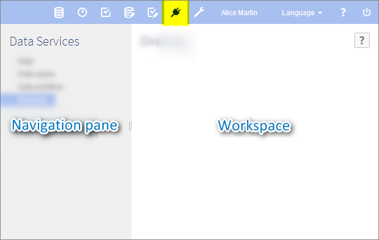

EBX5
Documentation > User Guide > Data services
Introduction to data services
Section contents
Overview
What is a data service?
A data service is a standard Web service that can access data or interact with EBX5, thus offering some of the same functionality as is available through the user interface.
Data services can be dynamically generated based on data models from the Data Services area.
Lineage
Lineage is used to establish user permission profiles for non-human users, namely data services. When accessing data using WSDL interfaces, data services use the permission profiles established through lineage.
Glossary
See alsoData services
Using the Data Services area user interface

Note
This area is available only to authorized users in the 'Advanced perspective'.
Related concepts
 User guide table of contents
User guide table of contents